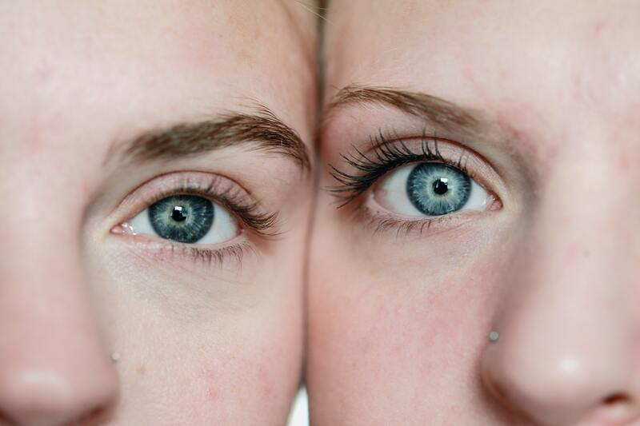

1 - Como você sente sua pele?
Muito Oleosa, de longe se ve brilho
Sinto que a testa e nariz são oleosos, já a bochecha é seca, chega a descascar
Não sinto minha pele nem seca e nem oleosa
Muito seca, chega a descascar